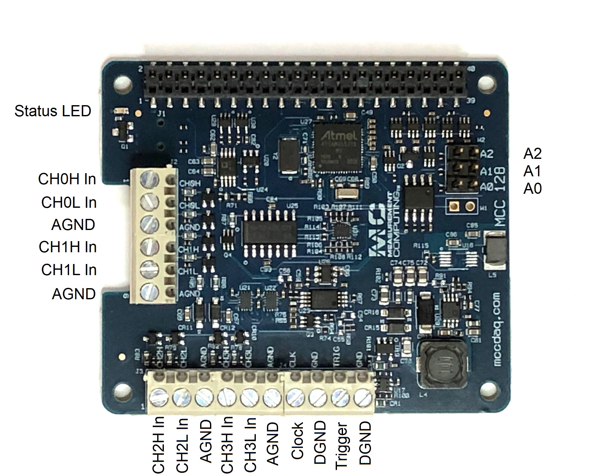
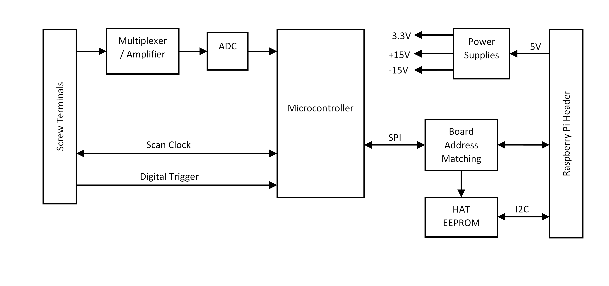
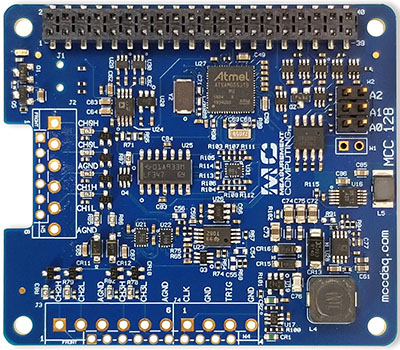
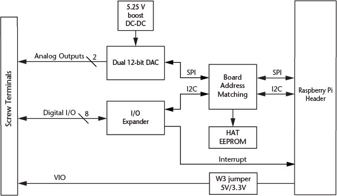
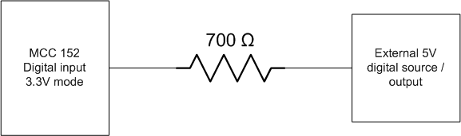

Hardware Overview¶
The MCC DAQ HATs are Raspberry Pi add-on boards (Hardware Attached on Top). They adhere to the Raspberry Pi HAT specification, but also extend it to allow stacking up to 8 MCC boards on a single Raspberry Pi.
C and Python libraries, documentation, and examples are provided to allow you to develop your own applications.
Hardware Compatibility¶
The MCC DAQ HATs are compatible with all Raspberry Pi models with the 40-pin GPIO header (not the original Pi 1 A or B with the 26-pin header.) They are generally not compatible with any other brand of Raspberry Pi HAT or add-on board that attaches to the GPIO header, or devices that use the Raspberry Pi SPI interface.
In particular, LCD displays that use the GPIO header (not HDMI) usually use the SPI interface and will prevent the DAQ HATs from working. Even if the display is removed, the driver is probably still loaded by /boot/config.txt and will cause issues with the DAQ HATs. If you have a problem with your device and have used a GPIO header display with your Raspberry Pi then consult your display hardware documentation for how to remove the driver.
The specific pins used by each DAQ HAT are documented in the electrical specifications for that device.
MCC 118¶
The MCC 118 is an 8-channel analog voltage input board with the following features:
- 12-bit, 100 kS/s A/D converter
- ±10 V single-ended analog inputs
- Factory calibration with ±20.8 mV input accuracy
- Bidirectional scan clock
- Onboard sample buffers
- Digital trigger input
Board components¶
Screw terminals¶
- CH 0 In to CH 7 In (CHx): Single-ended analog input terminals.
- Clock (CLK): Bidirectional terminal for scan clock input / output. Set the direction with software. Set for input to clock the scans with an external clock signal, or output to use the internal scan clock.
- Trigger (TRIG): External digital trigger input terminal. The trigger mode is software configurable for edge or level sensitive, rising or falling edge, high or low level.
- AGND (GND): Common ground for the analog input terminals.
- DGND (GND): Common ground for the clock and trigger terminals.
Address jumpers¶
- A0 to A2: Used to identify each HAT when multiple boards are connected. The first HAT connected to the Raspberry Pi must be at address 0 (no jumper). Install jumpers on each additional connected board to set the desired address. Refer to the Installing multiple boards topic for more information about the recommended addressing method.
Status LED¶
The LED turns on when the board is connected to a Raspberry Pi with external power applied and flashes when communicating with the board. The LED may be blinked by the user.
Header connector¶
The board header is used to connect with the Raspberry Pi. Refer to Installing the DAQ HAT board for more information about the header connector.
Functional block diagram¶

Functional details¶
Scan clock¶
The clock input / output (terminal CLK) is used to output the internal scan clock or apply an external scan clock to the device. The clock input signal may be a 3.3V or 5V TTL or CMOS logic signal, and the output will be 3.3V LVCMOS. A scan occurs for each rising edge of the clock, acquiring one sample from each of the selected channels in the scan. For example, when scanning channels 0, 1, and 2 the conversion activity will be:

Trigger¶
The trigger input (terminal TRIG) is used to hold off the beginning of an analog input scan until the desired condition is met at the trigger input. The trigger input signal may be a 3.3V or 5V TTL or CMOS logic signal. The input condition may be rising edge, falling edge, high level, or low level.
Firmware updates¶
Use the firmware update tool to update the firmware on your MCC 118 board(s). The “0” in the example below is the board address. Repeat the command for each MCC 118 address in your board stack. This example demonstrates how to update the firmware on the MCC 118 that is installed at address 0:
mcc118_firmware_update 0 ~/daqhats/tools/MCC_118.hex
MCC 118-OEM¶
An OEM version is available that is designed with (unpopulated) header connectors instead of screw terminals. The board accepts 1x6 and 1x10 0.1” spacing header connectors. The MCC 118-OEM is functionally equivalent to the standard version. Refer to the Electrical Specifications for connector information.

Specifications¶
MCC 128¶
The MCC 128 is an analog voltage input board with the following features:
- 16-bit, 100 kS/s A/D converter
- Single-ended and differential input modes
- 4 differential or 8 single-ended channels
- ±10 V, ±5V, ±2V, and ±1V input ranges
- Factory calibration
- Bidirectional scan clock
- Onboard sample buffers
- Digital trigger input
Single Ended Input configuration¶

Differential Input Configuration¶
Board components¶
Screw terminals¶
- CH0H/CH0L to CH3H/CH3L (CHx): Analog input terminals.
- Clock (CLK): Bidirectional terminal for scan clock input / output. Set the direction with software. Set for input to clock the scans with an external clock signal, or output to use the internal scan clock.
- Trigger (TRIG): External digital trigger input terminal. The trigger mode is software configurable for edge or level sensitive, rising or falling edge, high or low level.
- AGND (GND): Common ground for the analog input terminals.
- DGND (GND): Common ground for the clock and trigger terminals.
Address jumpers¶
- A0 to A2: Used to identify each HAT when multiple boards are connected. The first HAT connected to the Raspberry Pi must be at address 0 (no jumper). Install jumpers on each additional connected board to set the desired address. Refer to the Installing multiple boards topic for more information about the recommended addressing method.
Status LED¶
The LED turns on when the board is connected to a Raspberry Pi with external power applied and flashes when communicating with the board. The LED may be blinked by the user.
Header connector¶
The board header is used to connect with the Raspberry Pi. Refer to Installing the DAQ HAT board for more information about the header connector.
Functional block diagram¶
Functional details¶
Scan clock¶
The clock input / output (terminal CLK) is used to output the internal scan clock or apply an external scan clock to the device. The clock input signal may be a 3.3V or 5V TTL or CMOS logic signal, and the output will be 3.3V LVCMOS. A scan occurs for each rising edge of the clock, acquiring one sample from each of the selected channels in the scan. For example, when scanning channels 0, 1, and 2 the conversion activity will be:

Trigger¶
The trigger input (terminal TRIG) is used to hold off the beginning of an analog input scan until the desired condition is met at the trigger input. The trigger input signal may be a 3.3V or 5V TTL or CMOS logic signal. The input condition may be rising edge, falling edge, high level, or low level.
Firmware updates¶
Use the firmware update tool to update the firmware on your MCC 128 board(s). The “0” in the example below is the board address. Repeat the command for each MCC 128 address in your board stack. This example demonstrates how to update the firmware on the MCC 128 that is installed at address 0:
mcc128_firmware_update 0 ~/daqhats/tools/MCC_128.fw
MCC 128-OEM¶
An OEM version is available that is designed with (unpopulated) header connectors instead of screw terminals. The board accepts 1x6 and 1x10 0.1” spacing header connectors. The MCC 128-OEM is functionally equivalent to the standard version. Refer to the Electrical Specifications for connector information.
Specifications¶
MCC 134¶
The MCC 134 is a 4-channel thermocouple input board with the following features:
- 24-bit A/D converter
- Onboard sensor for cold junction compensation
- Linearization for J, K, R, S, T, N, E, B type thermocouples
- Open thermocouple detection
- Thermocouple inputs are electrically isolated from the Raspberry Pi for use in harsh environments
Board components¶
Screw terminals¶
- CH0H/CH0L to CH3H/CH3L (+x-): Differential thermocouple input terminals.
Address jumpers¶
- A0 to A2: Used to identify each HAT when multiple boards are connected. The first HAT connected to the Raspberry Pi must be at address 0 (no jumper). Install jumpers on each additional connected board to set the desired address. Refer to the Installing multiple boards topic for more information about the recommended addressing method.
Status LED¶
The LED turns on when the board is connected to a Raspberry Pi with external power applied.
Header connector¶
The board header is used to connect with the Raspberry Pi. Refer to Installing the DAQ HAT board for more information about the header connector.
Functional block diagram¶

Functional details¶
Best practices for accurate thermocouple measurements¶
The MCC 134 should achieve results within the maximum thermocouple accuracy specifications when operating within the documented environmental conditions. Operating in conditions with excessive temperature transients or airflow may affect results. In most cases, the MCC 134 will achieve the typical specifications. To achieve the most accurate thermocouple readings, MCC recommends the following practices:
- Reduce the load on the Raspberry Pi processor. Running a program that fully loads all 4 cores on the Raspberry Pi processor can raise the temperature of the processor above 70 °C. Running a program that only loads 1 core will operate approximately 20 °C cooler.
- Minimize environmental temperature variations. Place the MCC 134 away from heat or cooling sources that cycle on and off. Sudden environmental changes may lead to increased errors.
- Provide a steady airflow, such as from a fan. A steady airflow can dissipate heat and reduce errors.
- When configuring multiple MCC DAQ Hats in a stack, position the MCC 134 farthest from the Raspberry Pi board. Since the Raspberry Pi is a significant heat source, placing the MCC 134 farthest from the Pi will increase accuracy.
For additional information, refer to the Measuring Thermocouples with Raspberry Pi and the MCC 134 Tech Tip.
Specifications¶
MCC 152¶
The MCC 152 is an analog output / digital I/O board with the following features:
- 2 analog outputs
- 12-bit D/A converter
- 0 - 5 V outputs
- 5 mA output drive, sourcing
- Simultaneous update capability
- 8 digital I/O
- 5 V / 3.3 V supply voltage, jumper-selectable
- Bit-configurable for input (power on default) or output
- Outputs may be set to push-pull or open-drain (port-configurable)
- Programmable pull-up/pull-down resistors (disconnected on outputs when set to open-drain)
- 10 mA source/25 mA sink per output
- Interrupt on input state change

Board components¶
Screw terminals¶
- AO0 to AO1 (AOx): Analog output terminals.
- DIO0 to DIO7 (DIOx): Digital input/output terminals.
- VIO (VIO): Digital I/O supply voltage (5 V or 3.3 V, selectable with jumper W3.)
- AGND (AGND): Common ground for the analog output terminals.
- DGND (DGND): Common ground for the digital I/O terminals.
Address jumpers¶
- A0 to A2: Used to identify each DAQ HAT when multiple boards are connected. The first DAQ HAT connected to the Raspberry Pi must be at address 0 (no jumper). Install jumpers on each additional connected board to set the desired address. Refer to the Installing multiple boards topic for more information about the recommended addressing method.
DIO Power jumper (W3)¶
- 5V and 3.3V: Selects the DIO voltage; the factory default is 5 V. Refer to Mixing 3.3V and 5V digital inputs for more information about the DIO supply voltage.
Status LED¶
The LED turns on when the board is connected to a Raspberry Pi with external power applied.
Header connector¶
The board header is used to connect with the Raspberry Pi. Refer to Installing the DAQ HAT board for more information about the header connector.
Functional block diagram¶
Functional details¶
Mixing 3.3V and 5V digital inputs¶
The MCC 152 digital inputs are tolerant of 5V signals when the DIO is set to 3.3V operation with jumper W3. However, current can flow into the MCC 152 from the 5V signal, so the user must limit this current to avoid raising the voltage of the digital power supply rail (VIO) and possibly damaging components. MCC recommends using a series resistor of 700 ohms or larger.
Example:
Specifications¶
MCC 172¶
The MCC 172 is a 2-channel analog voltage input board with the following features:
- Two 24-bit, 51.2 kS/s A/D converters (one per channel)
- ±5 V AC coupled differential analog inputs
- IEPE sensor support
- 10-32 and screw terminal connectors for the analog inputs
- ADC conversions can be synchronized between multiple boards
- Onboard sample buffers
- Digital trigger input
Board components¶
10-32 coaxial connectors¶
- CH0 and CH1 (CHx): Analog input connectors (do not connect an input source to the 10-32 connectors and screw terminals at the same time).
Screw terminals¶
- CH0+/CH0- and CH1+/CH1- (CHx+/CHx-): Analog input terminals (do not connect an input source to the 10-32 connectors and screw terminals at the same time).
- Trigger (TRIG): External digital trigger input terminal. The trigger mode is software configurable for edge or level sensitive, rising or falling edge, high or low level.
- DGND (GND): Digital ground for the trigger terminal.
Address jumpers¶
- A0 to A2: Used to identify each HAT when multiple boards are connected. The first HAT connected to the Raspberry Pi must be at address 0 (no jumper). Install jumpers on each additional connected board to set the desired address. Refer to the Installing multiple boards topic for more information about the recommended addressing method.
Status LED¶
The LED turns on when the board is connected to a Raspberry Pi with external power applied and flashes when communicating with the board. The LED may be blinked by the user.
Header connector¶
The board header is used to connect with the Raspberry Pi. Refer to Installing the DAQ HAT board for more information about the header connector.
Functional block diagram¶

Functional details¶
ADC clock¶
The ADCs on a board share the same clock and are synchronized to start conversions at the same time for synchronous data. The clock and synchronize signals may also be shared across the Raspberry Pi GPIO header to synchronize multiple MCC 172s. The clock is programmable for various sampling rates between 51.2 kS/s and 200 S/s.
Trigger¶
The trigger input (terminal TRIG) is used to hold off the beginning of an analog input scan until the desired condition is met at the trigger input. The trigger input signal may be a 3.3V or 5V TTL or CMOS logic signal. The input condition may be rising edge, falling edge, high level, or low level. The trigger may also be shared across the Raspberry Pi GPIO header to synchronize multiple MCC 172s.
Due to the nature of the filtering in the A/D converters there is an input delay of 39 samples, so the data coming from the converters at any time is delayed by 39 samples from the current time. This is most noticeable when using a trigger - there will be approximately 39 samples prior to the trigger event in the captured data.
Alias Rejection¶
At low sampling rates, certain high frequency signals (at multiples of 128 * the sampling rate) can fall below the cutoff frequency of the fixed analog anti-aliasing filter and create aliasing in the data. Using transducers with a bandwidth lower than 100 kHz should not affect measurement results. Sampling at 10.24 kHz or higher will also ensure that the anti-aliasing filter suppresses all signals that could alias into the data.
Firmware updates¶
Use the firmware update tool to update the firmware on your MCC 172 board(s). The “0” in the example below is the board address. Repeat the command for each MCC 172 address in your board stack. This example demonstrates how to update the firmware on the MCC 172 that is installed at address 0:
mcc172_firmware_update 0 ~/daqhats/tools/MCC_172.fw